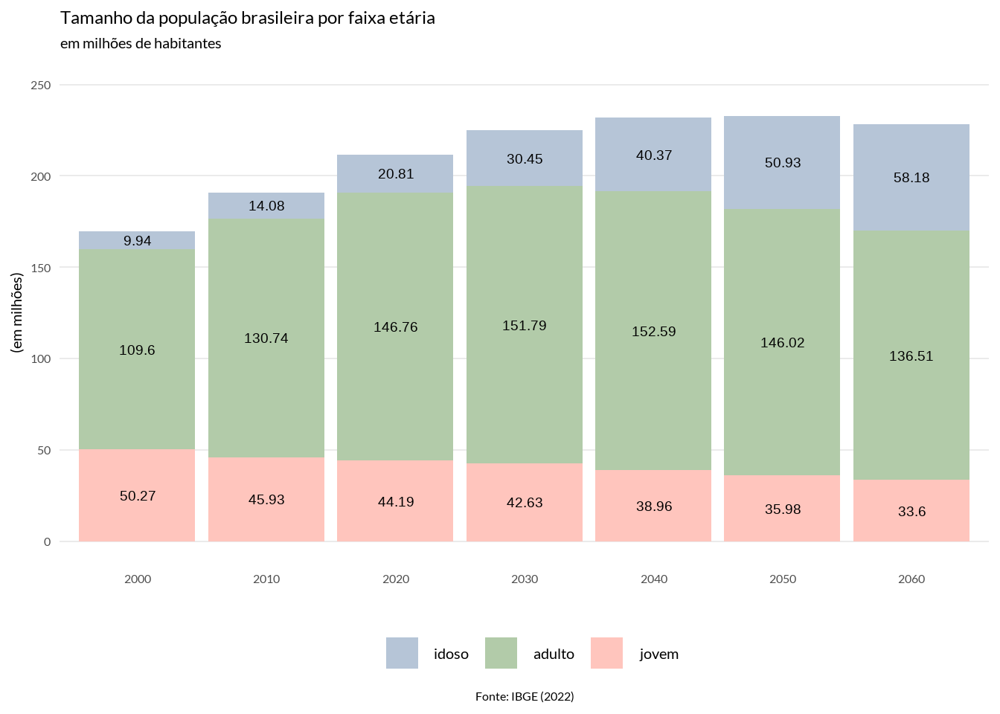
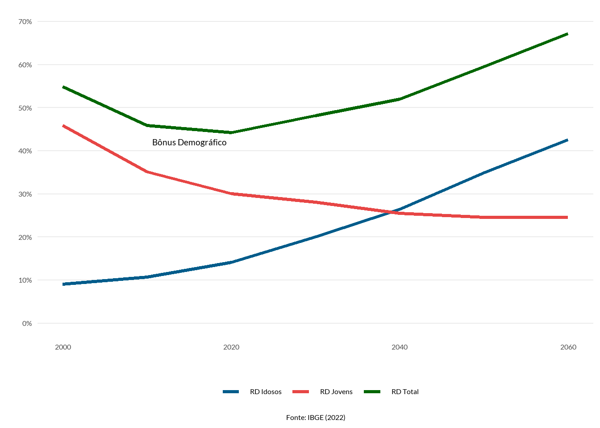
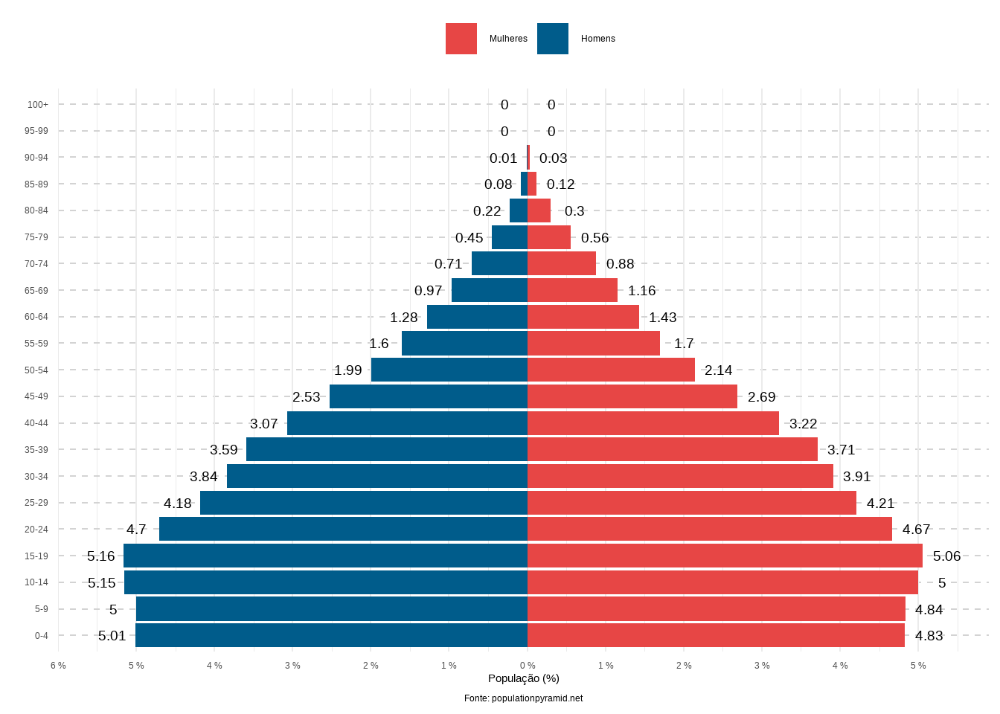
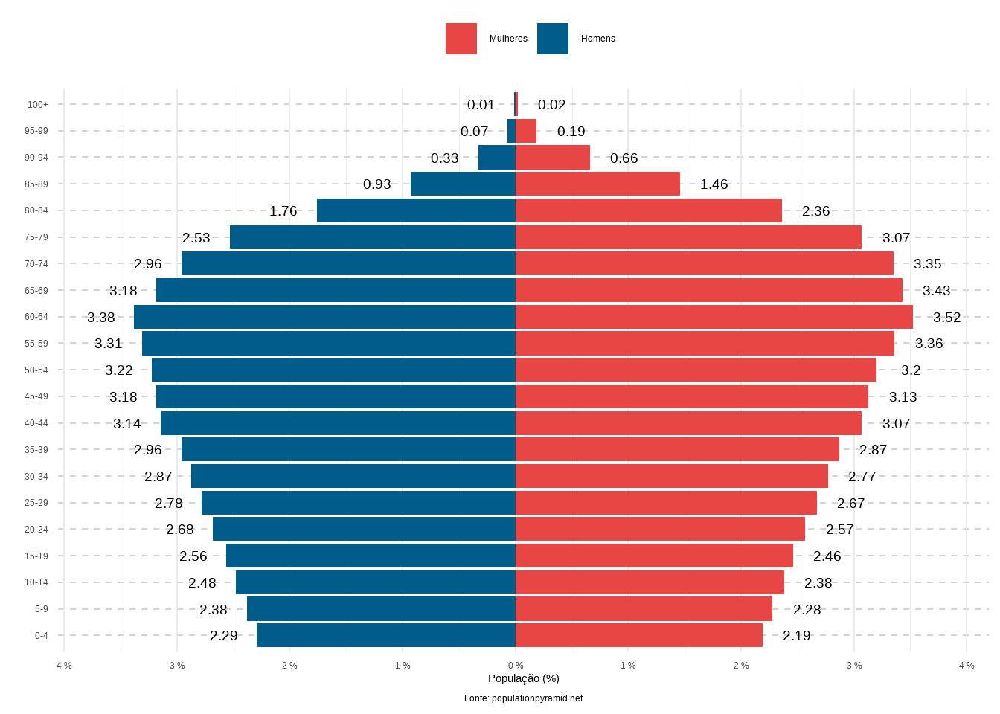

# A tibble: 3 × 8
id n_00 n_10 n_20 n_30 n_40 n_50 n_60
<chr> <dbl> <dbl> <dbl> <dbl> <dbl> <dbl> <dbl>
1 adulto 109597948 130742028 146756243 151794581 152587549 146024124 136506636
2 idoso 9935100 14081477 20813349 30448865 40368048 50932665 58181930
3 jovem 50266122 45932294 44186100 42625016 38964325 35976487 33597781Figuras
Figura 01

Figura 02

Figura 03 - Pirâmides Etárias (2000)
# A tibble: 6 × 3
Age M F
<chr> <dbl> <dbl>
1 0-4 8814234 8499111
2 5-9 8794739 8508587
3 10-14 9055094 8798424
4 15-19 9081873 8890568
5 20-24 8258877 8206249
6 25-29 7343365 7399213# A tibble: 6 × 5
Age Gender Population PopPerc signal
<chr> <chr> <dbl> <dbl> <dbl>
1 0-4 M 8814234 -5.01 -1
2 5-9 M 8794739 -5 -1
3 10-14 M 9055094 -5.15 -1
4 15-19 M 9081873 -5.16 -1
5 20-24 M 8258877 -4.7 -1
6 25-29 M 7343365 -4.18 -1
Figura 04 - Pirâmides Etárias (2030)
# A tibble: 6 × 3
Age M F
<chr> <dbl> <dbl>
1 0-4 6601127 6333085
2 5-9 6840704 6568290
3 10-14 7338068 7051503
4 15-19 7510209 7225728
5 20-24 7703975 7446089
6 25-29 8093913 7892687# A tibble: 6 × 5
Age Gender Population PopPerc signal
<chr> <chr> <dbl> <dbl> <dbl>
1 0-4 M 6601127 -2.95 -1
2 5-9 M 6840704 -3.06 -1
3 10-14 M 7338068 -3.28 -1
4 15-19 M 7510209 -3.35 -1
5 20-24 M 7703975 -3.44 -1
6 25-29 M 8093913 -3.61 -1Figura 05 - Pirâmides Etárias (2060)
# A tibble: 6 × 3
Age M F
<chr> <dbl> <dbl>
1 0-4 5187694 4967473
2 5-9 5407179 5179616
3 10-14 5628362 5393928
4 15-19 5820338 5582194
5 20-24 6078260 5840516
6 25-29 6301111 6069329# A tibble: 6 × 5
Age Gender Population PopPerc signal
<chr> <chr> <dbl> <dbl> <dbl>
1 0-4 M 5187694 -2.29 -1
2 5-9 M 5407179 -2.38 -1
3 10-14 M 5628362 -2.48 -1
4 15-19 M 5820338 -2.56 -1
5 20-24 M 6078260 -2.68 -1
6 25-29 M 6301111 -2.78 -1